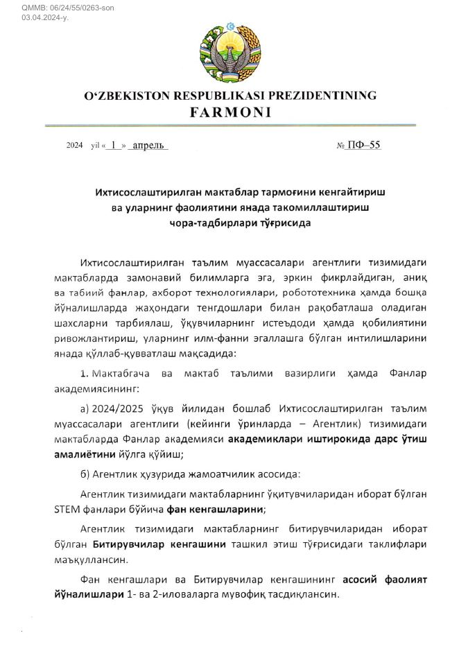

PF-55 Pármanı
«Qánigelestirilgen mektepler tarmaǵın keńeytiw hám olardıń jumısın jáne de jetilistiriw ilajları haqqında»
Maqseti
Pármannıń maqseti — Qánigelestirilgen bilimlendiriw mekemeleri agentligi sistemasındaǵı mekteplerde aniq hám tábiyiy pánler, IT hám robototexnika boyınsha dúnyalıq teńlesleri menen básekilese alatuǵın, erkin pikirleytuǵın jaslardı tárbiyalaw hám oqıwshılardıń talantın rawajlandırıw.
Tiykarǵı mazmunı — ápiwayı tilde
1Akademikler sabaq ótedi
2024/2025 oqıw jılınan Pánler akademiyasınıń akademikleri Agentlik mekteplerinde dóretiwshilik kónlikpelerin rawajlandırıwshı sabaqlar ótedi, ámeliy joybarlarǵa járdem beredi, oqıwshılardı ilimiy laboratoriyalar menen tanıstıradı hám «Jas akademikler» klubların shólkemlestiredi.
2STEM pán keńesleri hám Pitkeriwshiler keńesi
Agentlik janında muǵallimlerden ibarat STEM pán keńesleri hám pitkeriwshilerden ibarat Pitkeriwshiler keńesi dúziledi. Jańa STEM baǵdarlamaları pán keńesleri menen kelisilip engiziledi, hár jılı bir ret Pitkeriwshiler qurıltayı ótkeriledi.
3«Ixtirochilikka qadam» tańlawı
Hár jılı mektep oqıwshıları arasında bilimlendiriw, IT, jasıl energiya, ekologiya, klimat ózgerisi hám awıl xojalıǵı boyınsha jańa ónim yamasa xızmet jaratıw tańlawı ótkeriledi. Jeńimpazlardıń joybarları qarjılandırıladı.
4Pánler shet tilinde + 100% ústeme
2024/2025 jılınan dóretiwshilik hám qánigelestirilgen mekteplerde B2 hám onnan joqarı sertifikatı bar muǵallimler pánlerdi shet tilinde oqıta aladı. Matematika, fizika, ximiya, biologiya, science hám informatikanı shet tilinde oqıtatuǵın muǵallimlerge ayına tarif stavkasınıń 100% muǵdarında ústeme tólenedi.
5Prezident mektepleri: +350% ústeme
Prezident mekteplerindegi jergilikli muǵallimlerge ayına tarif stavkasınıń 350% muǵdarında ústeme tólenedi. Shárti: Cambridge’tiń 3 kursın (Introductory, Extension, Marking) tamamlaw, keminde 1 jıl jumıs tájiriybesi hám C1 dárejesindegi til sertifikatı.
6Watanparwarlıq tárbiyası
Sabaqtan tıs: 5–8-klasslarda ullı sarkardalardıń ómiri arqalı Watan qorǵawshısı kónlikpeleri, 9–11-klasslarda áskeriy oyınlar, sport jarısları hám áskeriyler menen ushırasıwlar. Hár jılı «Turon yo‘lbarslari» áskeriy-sport jarısı, milliy múyeshler hám «Turon» teatr studiyası.
7Injenerlik baǵdarlaması
2025/2026 jılınan Mirzo Ulug‘bek atındaǵı mektepte «Jańa Ózbekstan» universiteti menen birge 5 jıllıq STEM injenerlik baǵdarlaması engiziledi: oqıwshılar 6-klass pitkeriwshileri arasınan tańlanadı, tabıslı pitkergenler universitettiń 2-kursınan oqıwın dawam ettire aladı.
88 jańa mektep hám filiallar
2025–2026 jıllarda Agentlik sistemasında 8 jańa qánigelestirilgen mektep quriladı (Romitan, Mirzachól, Mirishkor, Davlatobod, Xovos, Tashkent rayonı, Qibray, Gurlan). 13 mektep-internat bazasında Muhammad al-Xorazmiy atındaǵı mekteptiń filialları ashıladı.
Bul bizge ne beredi?
- Oqıwshılarǵa: akademikler menen sabaqlar, «Jas akademikler» klubları, «Ixtirochilikka qadam» tańlawı hám áskeriy-sport jarısları.
- Muǵallimlerge: B2+ sertifikatı menen pánlerdi ingliz tilinde oqıtıw hám 100% ústeme múmkinshiligi.
- Pitkeriwshilerge: Pitkeriwshiler keńesi hám jıllıq qurıltay arqalı mektep penen baylanıstı saqlaw.
Qosımshalar
- 1Pán keńesleriniń tiykarǵı jumıs baǵdarları
- 2Pitkeriwshiler keńesiniń tiykarǵı jumıs baǵdarları
- 32025–2026 jıllarda qurılatuǵın mektepler dizimi
- 4Bilim sapasın arttırıw boyınsha «Jol kartası»
- 5Prezidenttiń ayırım hújjetlerine ózgerisler

PDFÓzbekstan Respublikası Prezidentiniń Pármanı PF-55
Bul bet — Pármannıń ápiwayı tildegi qısqasha túsindirmesi. Rásmiy kúshke tek rásmiy tekst iye (PDF yamasa lex.uz).